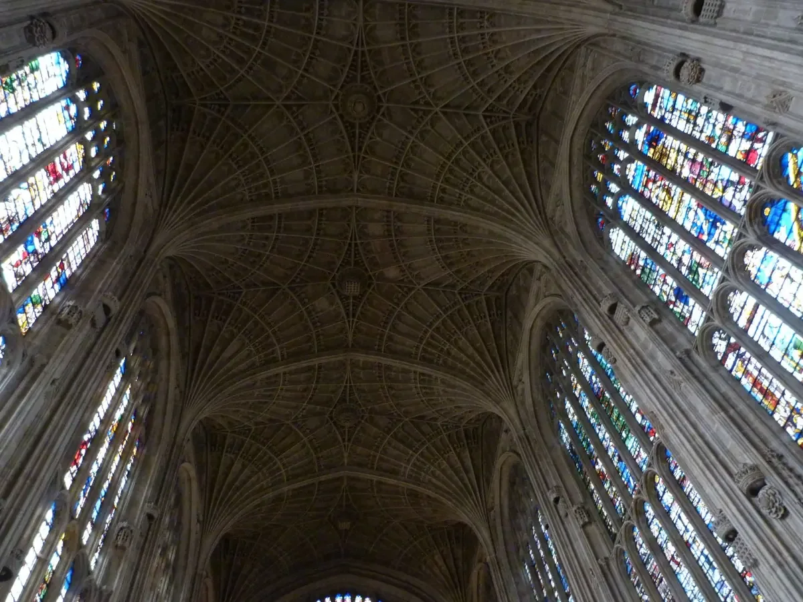
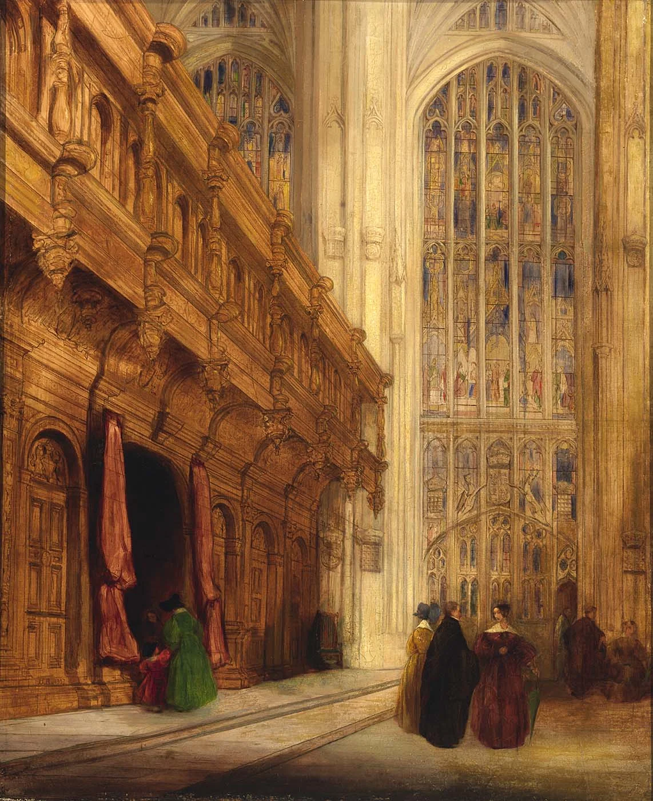

아직 펼치지 않은 카드성탄을 노래하다 · 5킹스 칼리지 예배당부채를 펼친 듯한 돌 천장 아래, 해마다 성탄 전야에 어떤 노래가 울릴까요?천장을 봐! 돌로 만든 부채 같지?
1918년부터 · 해마다 12월 24일 오후 3시영국 케임브리지 · 킹스 칼리지 예배당
킹스 칼리지 예배당
1918년 성탄 전야, 영국 케임브리지의 킹스 칼리지 예배당에서 처음 열린 예배가 백 년 넘게 이어지고 있어요. 해마다 오후 3시, 이 예배는 성가대 소년 한 명이 혼자 부르는 첫 절로 시작해요. 한 목소리에서 모두의 노래까지, 소리를 차례로 켜 보세요.
영국의 아주 큰 돌 예배당에서는 크리스마스이브 오후마다, 아이 한 명이 혼자 첫 노래를 불러. 그다음엔 성가대가, 그다음엔 모두가 함께 불러. 같이 들어 볼까?
검수 전 시안이에요(기준서 1판). 장면에는 기록에 있는 것만 옮겼어요. 소리는 킹스 칼리지 성가대의 녹음이 아니라, 옛 가락에 이 안내서가 화음을 붙여 컴퓨터로 연주한 소리예요. 상상은 ‘눈 감고 상상해 보기’에서만 해요.
시안 확인용카드 단계 미리 보기
1
1918년 성탄 전야
1918년 11월 제1차 세계 대전이 멈추고 몇 주 뒤, 영국 케임브리지 대학의 킹스 칼리지 예배당에서 새 예배가 처음 열렸어요. ‘아홉 번의 성경 봉독과 캐럴 축제(A Festival of Nine Lessons and Carols)’예요.
예배를 짠 사람은 그해 예배당을 맡은 사제(딘, Dean)가 된 서른네 살의 에릭 밀너화이트(Eric Milner-White)였어요. 그는 전쟁 동안 군목으로 서부 전선과 이탈리아의 병사들 곁에 있었고, 그 경험으로 교회 예배가 더 상상력 있게 달라져야 한다고 생각했어요.

그는 1880년 영국 트루로(Truro)의 벤슨(Edward White Benson) 주교가 짠 순서를 빌려 왔어요. 트루로에서는 대성당을 짓는 동안, 성탄 전야 밤 10시에 나무로 지은 임시 건물에서 이 예배를 드렸어요. 벤슨의 아들은 그 예배를 “아홉 곡의 캐럴과 아홉 개의 아주 짧은 봉독”으로 기억했어요.
전쟁이 끝난 해 크리스마스이브에, 한 사제가 성경 이야기와 캐럴을 번갈아 들려주는 예배를 처음 열었어.
물어보기오랜만에 집에 돌아온 사람에게, 너는 어떤 노래를 불러 주고 싶어?
2
오후 3시, 첫 소리
해마다 12월 24일 오후 3시, 예배당이 조용해지면 성가대 소년 한 명이 반주 없이 혼자 첫 절을 불러요. 찬송 「다윗 왕의 마을에(Once in Royal David's City)」예요. 1919년 순서를 고친 뒤로 이 예배는 늘 이 찬송으로 시작해요.
누가 부를지는 노래하기 바로 직전에야 정해요. 지휘자가 미리 준비시킨 소년들 가운데 한 명을 그 자리에서 가리켜요.
2절은 성가대가 오르간과 함께, 3절부터는 예배당의 모든 사람이 함께 불러요. 아래 소리를 1절부터 차례로 켜 보세요.

이 소리는 킹스 칼리지 성가대의 녹음이 아니에요. 1849년 헨리 존 건틀렛(Henry John Gauntlett)이 지은 가락에 이 안내서가 화음을 붙여, 노랫말 없이 컴퓨터로 연주한 소리예요.
노랫말은 1848년 세실 프랜시스 알렉산더(Cecil Frances Alexander)가 아이들을 위해 쓴 찬송시예요. 1절은 다윗의 마을 베들레헴의 외양간에서 마리아가 아기 예수를 구유에 눕힌 이야기예요(누가복음 2장 4~7절).
조용한 예배당에서 아이 한 명이 혼자 첫 노래를 시작해. 누가 부를지는 바로 직전에 정한대!
물어보기1절, 2절, 3절을 차례로 들어 볼까? 소리가 어떻게 달라져?
3
아홉 번의 봉독
첫 찬송이 끝나면 사제가 여는 기도를 드리고, 성경을 아홉 번 읽어요. 그 사이사이 캐럴을 불러요. 성경은 1611년에 나온 영어 성경, 킹 제임스 역을 읽어요.
첫째 봉독은 에덴동산에서 하나님이 아담에게, 그의 후손이 뱀의 머리를 상하게 하리라고 말씀하는 이야기예요(창세기 3장 8~19절). 마지막 아홉째는 “태초에 말씀이 계셨다”로 시작하는 요한복음 1장 1~14절이에요.
첫째는 성가대 소년이 읽고, 마지막은 칼리지의 대표인 학장(프로보스트, Provost)이 읽어요. 사이에는 학생, 케임브리지 시장 같은 이들이 차례로 읽어요.
1983년부터는 해마다 작곡가에게 새 캐럴을 부탁해, 이 예배에서 처음 불러요.
예배당은 1446년부터 1515년까지 여러 왕을 거치며 지었어요. 부채를 펼친 듯한 돌 천장은 1512~1515년에 석공 존 워스텔(John Wastell)이 만들었는데, 이런 천장으로는 세계에서 가장 커요. 양옆에 열둘씩, 동쪽과 서쪽 끝에 하나씩 있는 큰 유리창은 1531년까지 채웠어요.
성경 이야기를 아홉 번 읽어. 처음은 성가대 아이가, 마지막은 학교의 제일 높은 어른이 읽어.
물어보기해마다 새 캐럴을 하나 만든다면, 올해 노래는 무엇에 대한 노래면 좋을까?
4
라디오를 타고 세계로
1928년, BBC 라디오가 이 예배를 처음 중계했어요. 그 뒤로 1930년 한 해를 빼고 해마다 방송했어요. 1932년부터는 바다 건너 다른 나라로 가는 방송에도 실렸어요.
제2차 세계 대전 때에도 방송은 이어졌어요. 옛 유리창은 떼어 내 안전한 곳에 두었고, 예배당에는 난방도 없었어요. 안전 때문에 방송에서는 ‘킹스’라는 이름도 말하지 않았어요.
지금은 세계에서 수백만 명이 이 예배를 들어요. 케임브리지의 오후 3시는 한국 시간으로 성탄절 0시예요.

2020년, 코로나19가 퍼졌을 때는 처음으로 회중 없이 미리 녹음한 예배를 같은 시각에 방송했어요.
성탄 전야, 이 첫 소리를 어디에서 듣고 싶나요?
전쟁 중에도 라디오로 이 노래가 나왔대. 대신 어디서 하는지는 비밀로 했어!
물어보기멀리 있는 누군가에게 노래를 보낸다면, 누구에게 들려주고 싶어?
눈 감고 상상해 보기
성탄 전야 오후, 오래된 돌 예배당. 촛불이 줄지어 흔들리고, 높은 유리창에 겨울 햇빛이 조금 남아 있어요. 기침 소리마저 멎은 고요 속에 작은 숨소리 하나가 들리고, 한 목소리가 부채꼴 돌 천장까지 올라가요.
눈을 감아 봐. 아주 크고 조용한 돌 예배당이야. 촛불이 반짝여. 아이 한 명이 숨을 쉬고, 노래를 시작해.
나의 자리
올해 성탄 전야, 나는 어디에서 누구와 어떤 노래를 듣고 싶나요?
성탄절에 제일 부르고 싶은 노래는 뭐야?
마음에 닿는 한 줄을 고르거나 직접 써 보세요. 한 줄을 남기면 이 자리의 도장이 찍혀요. 이 기기에만 저장돼요.
더 깊이
궁금한 칸만 펼쳐 읽어도 괜찮아요.
알고 보면
여는 기도의 한 줄 첫 찬송 뒤 사제가 읽는 여는 기도는 밀너화이트가 썼어요. 그 끝에서 이미 세상을 떠나 “다른 바닷가, 더 큰 빛 속에서” 우리와 함께 기뻐하는 이들을 기억하자고 해요. 전쟁이 막 끝난 때 쓴 기도예요.
맨의 편곡 1절 독창, 2절 성가대, 3절 모두의 순서는 1876~1929년 이 예배당의 오르가니스트였던 아서 헨리 맨(Arthur Henry Mann)의 편곡에서 왔어요. 첫 예배를 이끈 사람도 맨이에요.
퍼져 나간 순서 이 예배 순서는 곧 다른 교회들도 빌려 썼어요. 지금은 성탄 무렵 세계 여러 교회가 ‘아홉 봉독과 캐럴’ 예배를 드려요.
기록마다 다른 점
첫해의 첫 찬송 1918년 첫 예배는 「다윗 왕의 마을에」가 아니라 「일어나라, 착한 그리스도인들아(Up! Good Christen folk)」로 시작했어요. 1919년 순서를 고친 뒤 지금의 첫 찬송이 자리 잡았어요.
바다 건너 방송 학교 누리집은 1932년부터라고 하고, 2008년 예배 순서지는 ‘1930년대 초 어느 때’라고 적었어요. 1936년 BBC 제국 방송부터로 쓴 글도 있어요.
노래할 소년은 언제 알까 “몇 초 전”이라는 기사도 있고, 리허설에서 미리 몇 명을 골라 둔다는 이야기도 있어요. 마지막 순간에 한 명을 가리킨다는 점은 같아요.
직접 가 보기 · 들어 보기
확인한 날 · 2026년 11월 18일 · 바뀌기 쉬운 정보라 정기적으로 다시 확인해요
이 예배는 영국 시간 성탄 전야 오후 3시(한국 시간 25일 0시)에 BBC 라디오 4로 방송해 왔어요. 텔레비전의 「캐럴스 프롬 킹스(Carols from King’s)」는 따로 미리 녹화한 프로그램이에요.
예배당에 들어가는 방법은 해마다 달라질 수 있어요(오랫동안 줄을 섰고, 공개 추첨을 한 해도 있어요). 다녀가기 전에 킹스 칼리지 누리집에서 확인해 주세요.
한 목소리에서 모두의 노래로 금박
‘오후 3시, 첫 소리’에서 소리를 차례로 켜 3절 ‘모두 함께’까지 들으면 카드에 금박이 입혀져요.
‘오후 3시, 첫 소리’에서 3절 ‘모두 함께’까지 듣기
나의 자리 채색
이 첫 소리를 어디에서 들을지 골라 보세요. 둘 가운데 하나만 해도 카드가 채색돼요.
‘라디오를 타고 세계로’에서 들을 자리 고르기
아이와 함께 ‘영화처럼 보기’를 끝까지 보기
근거 보기 (20)
- 킹스 칼리지 누리집: 1918년 첫 예배, 1928년 첫 방송, 1930년 한 해 빼고 해마다, 전쟁 중 옛 유리·난방을 뺌, ‘킹스’ 이름을 말하지 않음, 1932년 해외 방송
- 킹스 칼리지 2018년 예배 순서지: 서른네 살, 군목 경험, 더 상상력 있는 예배, 트루로 나무 건물의 밤 10시 예배, 1절 ‘독창’·2절 ‘성가대’·“셋째 절부터 모두 함께”, 첫째는 성가대원·아홉째는 학장, 여는 기도와 전쟁에서 죽은 이들
- 킹스 칼리지 2008년 예배 순서지: 1919년 순서를 고친 뒤 늘 「다윗 왕의 마을에」로 시작, 벤슨의 아들이 기억한 “아홉 캐럴과 아홉 짧은 봉독”, ‘1930년대 초’ 해외 방송, 세계 수백만 명
- 킹스 칼리지 레코딩스: 1918년 첫 예배는 ‘Up! Good Christen folk’로 시작
- 클래식 FM: 1848년 알렉산더의 시, 1절 반주 없는 독창 뒤 2절에 성가대와 오르간, 1919년부터 첫 찬송
- 클래식 FM: 그날 지휘자가 고르는 독창자
- 가디언 기사(inkl 재게재): 후보 가운데 몇 초 전에 고름
- BBC 뮤직 매거진(classical-music.com): 1880년 성탄 전야 밤 10시 트루로
- 와이즈 뮤직 클래시컬: 1983년부터 해마다 새 캐럴, 봉독자(성가대원 … 시장 … 부학장)
- YourClassical: 2023년 순서표(첫째 성가대원, 아홉째 학장)
- 잉글랜드 역사 유산(Historic England) 등재 1139003: 1446~1515년에 짓고 1515~1531년에 유리창
- 위키백과(길잡이): King's College Chapel — 부채꼴 천장 1512~1515년 존 워스텔, 세계에서 가장 큼, 양옆 열둘씩 큰 창
- 위키백과(길잡이): Nine Lessons and Carols — 킹 제임스 역, 1983년부터 새 캐럴, 2020년 녹음 방송
- 위키백과(길잡이): Once in Royal David's City — 맨의 편곡, 건틀렛의 가락, 누가복음 2장 4~7절
- 그레셤 칼리지 강연(서멀리, 2020): 1930년에는 방송하지 않음, 1936년 제국 방송
- 패트릭 코머퍼드(2026년 3월): 밀너화이트는 군목으로 서부 전선과 이탈리아에, 1918~1941년 킹스의 딘, 여는 기도 “다른 바닷가, 더 큰 빛 속에서”
- 패트릭 코머퍼드(2026년 7월): 세계에서 가장 큰 부채꼴 천장(1512~1515년, 존 워스텔), 1531년까지 채운 큰 유리창
- Cambs Edition: 라디오 4로 성탄 전야 오후 3시 생방송, 텔레비전 「캐럴스 프롬 킹스」는 그달 앞서 녹화
- 케임브리지 대학 소식(2011): 성탄 전야 예배를 위해 밤낮으로 줄을 서는 사람들
- 킹스 칼리지 소식: 공개 추첨으로 표를 나눈 해
그림·사진·소리 출처
- 데이비드 로버츠 그림 · 퍼블릭 도메인 · 스미스소니언 미국 미술관 · 위키미디어 공용
- 사진: Sumit Surai · CC BY-SA 4.0 · 위키미디어 공용
- 사진: Si B · CC BY 2.0 · 위키미디어 공용
- 사진: DrMoschi · CC BY-SA 4.0 · 위키미디어 공용
- 「다윗 왕의 마을에」 1~3절 소리: 가락 헨리 존 건틀렛(1849, 퍼블릭 도메인) · 화음과 컴퓨터 연주는 이 안내서가 만듦
‘처음 만나는 기독교 문화’의 깊은 카드예요. 소리는 이 안내서가 만든 컴퓨터 연주예요. 카드 단계와 남긴 글은 이 기기에만 저장돼요.